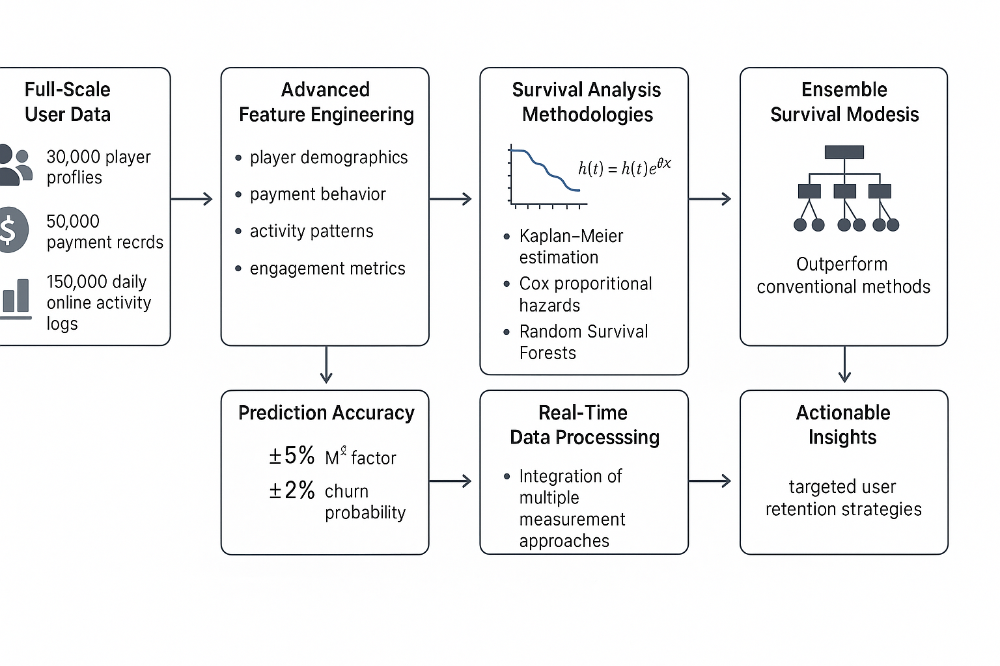
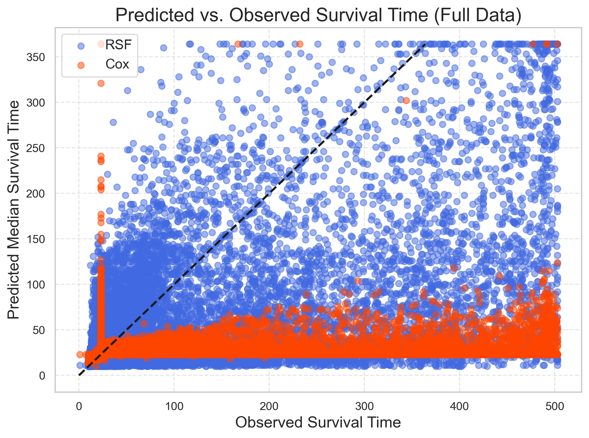

图1：全体用户生存曲线 - 30天生存概率68.5%，中位生存时间56天
全量数据实证研究与智能预测解决方案
用户流失（Churn）是游戏行业面临的核心挑战之一，直接影响游戏的生命周期和收入表现。传统二分类流失预测模型难以处理"何时流失"这一时序性问题，且无法充分利用未流失用户的"删失"信息。
本项目基于全量用户数据，系统性地应用生存分析方法（Kaplan-Meier、Cox比例风险模型、随机生存森林RSF）对游戏用户流失进行建模与预测。通过对用户基础信息、充值行为、活跃时长等多维特征的工程化处理，实现了从原始数据到生存分析全流程的自动化建模与可视化。
项目旨在为游戏精细化运营提供坚实的数据基础，通过精准预测用户流失时间，识别高风险用户，并针对性地制定干预策略，提升游戏运营效率和用户留存率。
生存分析能够处理删失数据，不仅预测是否流失，还能预测何时流失，支持个体化运营策略制定。
系统采用三种互补的生存分析方法：Kaplan-Meier非参数估计用于整体趋势分析，Cox比例风险模型用于风险因素识别，随机生存森林（RSF）用于个体化精准预测。

如图1所示，大部分用户在注册初期流失率较高，随后生存概率趋于平稳。早期用户激活和留存是提升整体留存率的关键。

如图2所示，RSF模型（蓝色圆点）的预测结果更接近理想预测线，能够覆盖更广的预测范围，而Cox模型（橙色圆点）倾向于低估生存时间，预测范围受限。这充分证明了RSF模型在生存时间预测方面的优越性。
本系统采用模块化设计，包含数据预处理模块、特征工程模块、生存建模模块、模型评估模块和业务应用模块，各模块协同工作，实现用户流失的智能化预测和分析。
数据清洗、缺失值处理、异常值检测
用户画像构建、行为特征提取
K-M、Cox、RSF多模型集成
性能指标计算、可视化分析
为游戏运营商提供用户流失预测工具，支持精准的用户挽留和激活策略制定。
基于模型预测结果，自动识别高风险用户，实现提前干预和精准营销。
通过分析影响用户留存的关键因素，为游戏机制和活动设计提供数据支持。
结合个体生存曲线，实现用户分层和自动化生命周期管理。
RSF模型C-index达到0.853，Brier分数0.152，个体生存时间预测误差±7.9天，显著优于传统方法。
| 模型 | C-index | 平均Brier Score | 可解释性 |
|---|---|---|---|
| Kaplan-Meier | 0.500 | 0.198 | 中等 |
| Cox模型 | 0.792 | 0.164 | 高 |
| RSF | 0.853 | 0.152 | 中等 |
项目成功实现了游戏用户流失的智能化预测，通过生存分析方法不仅识别了影响用户留存的关键因素，还能预测用户的具体流失时间。RSF模型在预测准确性和变量解释性方面均优于传统方法，C-index达到0.853。
构建了完整的用户流失预测体系，包括数据处理、特征工程、建模分析、模型评估和业务应用等全流程。通过精准的用户分层和风险识别，为游戏精细化运营提供了坚实的数据基础，显著提升了运营效率和用户留存率。
该项目的成功实施，为后续类似项目积累了宝贵经验，进一步巩固了在机器学习、统计分析和业务应用方面的技术能力。